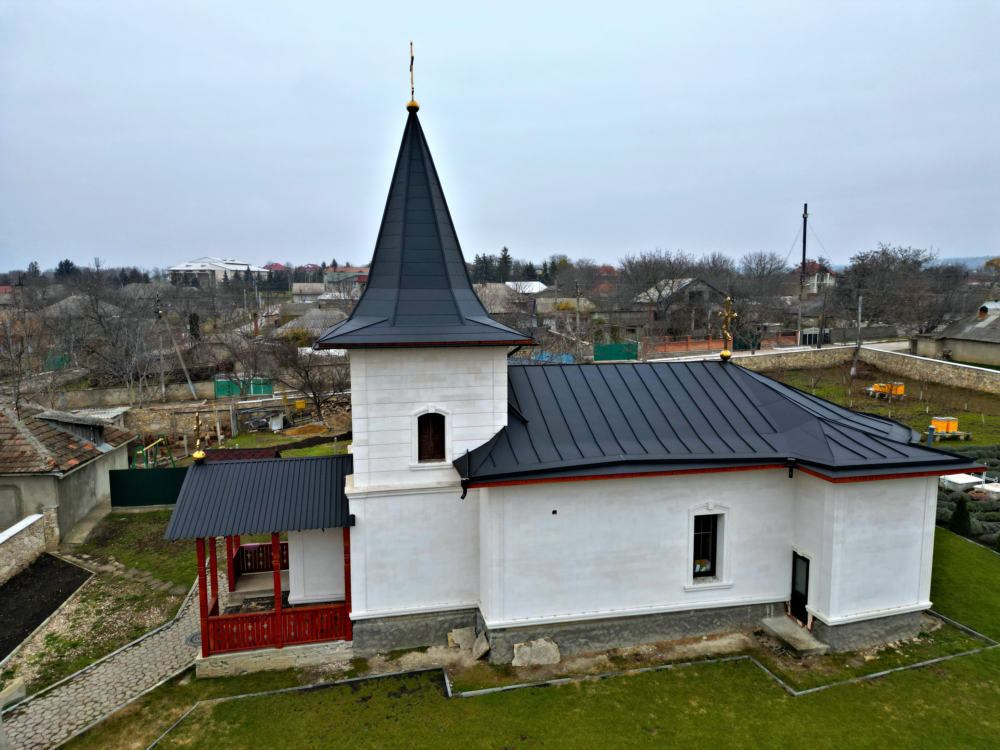
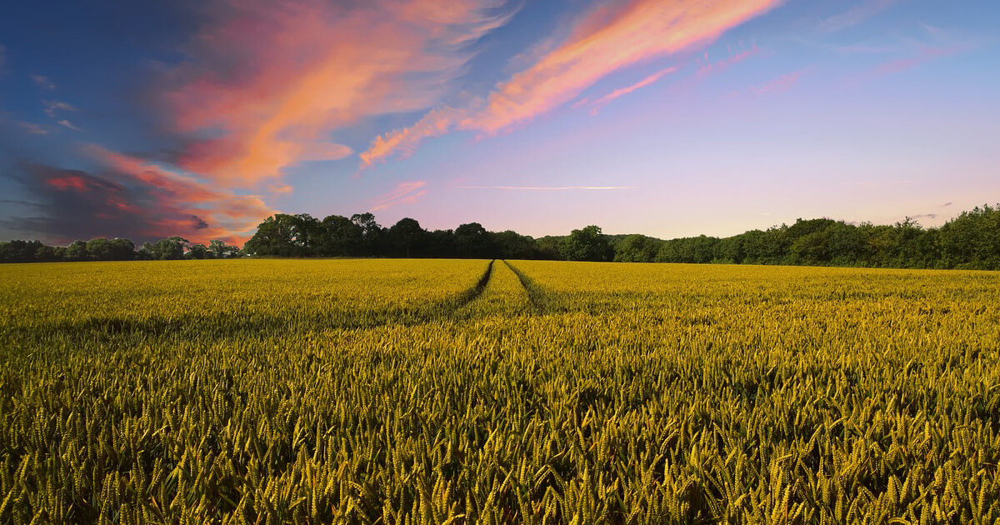
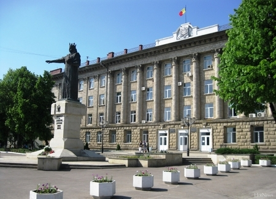

Explorează Moara de Piatră
🏛️ 1.Biserica satului Moara de Piatră

Lăcașul de cult are un rol esențial în păstrarea tradițiilor și valorilor spirituale ale satului, fiind un loc de întâlnire pentru oameni de toate vârstele. În timpul hramului și al marilor sărbători, biserica devine centrul vieții comunitare, adunând numeroși credincioși.
🌾 2. Zonele agricole și peisajele naturale

Moara de Piatră este înconjurat de câmpuri fertile și peisaje naturale liniștite. Acestea oferă priveliști frumoase în toate anotimpurile și reflectă stilul de viață rural. Agricultura este principala ocupație a locuitorilor, iar terenurile sunt folosite pentru cultivarea cerealelor și altor plante.
Primăria Moara de Piatră

Primăria satului Moara de Piatră este instituția care administrează activitatea locală și asigură buna funcționare a comunității. Aceasta se ocupă de dezvoltarea infrastructurii, gestionarea resurselor și implementarea proiectelor locale. De asemenea, primăria colaborează cu locuitorii și alte instituții pentru a îmbunătăți condițiile de trai și pentru a sprijini inițiativele comunitare.